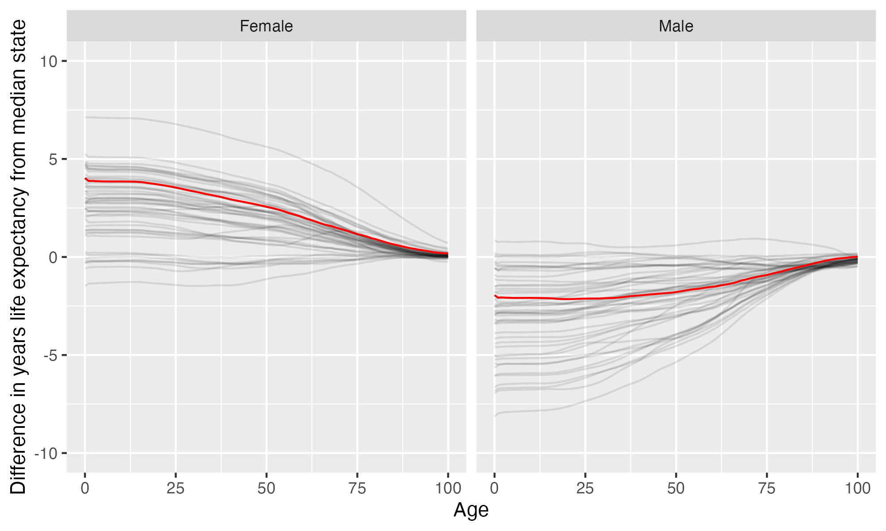

SUNY at Binghamton
Binghamton University is located in Vestal, New York. It is a public, 4-year or above institution.
From Wikipedia: The State University of New York at Binghamton (Binghamton University or SUNY Binghamton) is a public research university with campuses in Binghamton, Vestal, and Johnson City, New York. It is one of the four university centers in the State University of New York (SUNY) system. As of Fall 2020, 18,128 undergraduate and graduate students attended the university.
Notes
These are items that bear looking into more closely: some may be problems, some may be neutral, some may be good. These are just things that are worth noticing.
- Unsatisfactory conditions of academic freedom and tenure have been found to prevail at this institution according to the AAUP
Overview of institution
Institution kind: Doctoral Universities: Very High Research Activity
Undergrad program: Arts & sciences plus professions, high graduate coexistence
Graduate program: Research Doctoral: Comprehensive programs, no medical/veterinary school
Enrollment profile: High undergraduate (see more details below)
Average net price for undergrads on financial aid: $17,881 (1.3 times the equivalent cost of Harvard).
Average net price for families with $30K-48K income: $15,469 (This is $14,073 more expensive than what Harvard costs for equivalent students).
Actual price for your family: Go here to see what your family may be asked to pay. It can be MUCH lower than the average price but also higher for some.
Size and setting: Four-year, large, primarily residential
In state percentage: 88.9% of first year students come from New York
In US percentage: 97.7% of first year students come from the US (note that 0.0% have no residence reported)
Graduation rate (within 6 years) for students seeking a Bachelors: 83.8% (this is what is usually reported as “graduation rate”)
Graduation rate (within 4 years) for students seeking a Bachelors: 74.8%
Percent of students seeking a Bachelors who transfer out of this institution: 12.2%
Student to tenure-stream faculty ratio: 23.9 (undergrads to tenure-stream faculty)
Student to faculty ratio: 18.6 (undergrads to all faculty)
Degrees offered: Bachelor’s degree, Master’s degree, Post master’s certificate, Doctor’s degree: research scholarship, Doctor’s degree: professional practice
Schedule: Semester
Institution provides on campus housing: Yes
Dorm capacity: There are enough dorm beds for 7449 students
Freshmen required to live on campus: No
Meal plan: Yes, number of meals per week can vary
Covid vaccination requirement for students: At some point during the pandemic (this may have changed), this institution required students to be vaccinated against covid (based on info from here)
Covid vaccination requirement for faculty/staff: At some point during the pandemic (this may have changed), this institution required faculty and/or staff to be vaccinated against covid (based on info from here)
Advanced placement (AP) credits used: Yes
Disabilities: 5 percent of undergrads are registered as having disabilities.
{kind=link}
Overview of location
- Abortion in this state: Very protective (based on https://states.guttmacher.org/policies/ as of May 10, 2023)
- Gun law stringency: A- (higher grade = more stringent)
- State rep support for contraception: 76% of US reps from this state voted in favor of legal protections for contraception.
- State rep support for recognizing same-sex and interracial marriage: 96% of US reps from this state voted in favor of requiring states to recognize same-sex and interracial marriages performed in other states
- Anti-trans legislative risk: Safest (based on Erin Reed’s work, as of April 2, 2023)
- Ecological region: Allegheny Highlands forests
- Biome: Temperate Broadleaf & Mixed Forests
- Distance to mountains: 28.5 miles to Appalachian Mountains
- Climate: See overview at WeatherSpark
Similar institutions
This is using information about school size, acceptance rate, yield rate, graduation rate, cost, athletic conference, and similar metrics, but it can miss important axes of similarity (for example, culinary versus hair styling schools).
Map
Enrollment
| SUNY at Binghamton | Change over ≤ 11 years | Trend | America East | Doctoral Universities: Very High Research Activity | |
|---|---|---|---|---|---|
| Undergrads (full time) | 13,966 (2021) |

|
↑ 247 per year |
||
| Undergrads (part time) | 341 (2021) |

|
|||
| Grad students (full time) | 2,234 (2021) |

|
↑ 62 per year |
||
| Grad students (part time) | 1,514 (2021) |

|
↑ 32 per year |
||
| Admission rate (undergrads) | 44% (2021) |

|
|||
| Yield rate (percent of applicants offered undergraduate admission who accept) | 18% (2021) |

|
✪✪ Better (higher) than 40% |
✪ Better (higher) than 11% |
|
| Graduation rate (bachelors in 6 years) | 84% (2021) |

|
✪✪✪✪✪ Better (higher) than 90% |
✪✪✪✪ Better (higher) than 61% |
|
| Transfer out rate (bachelors) | 12% (2021) |

|
✪✪✪✪✪ Better (lower) than 100% |
✪✪✪ Better (lower) than 54% |
Student financing
At many universities, almost no students pay the listed tuition and fees (“sticker price”): instead, their financial aid package lowers this dramatically, but how much students pay can vary substantially based on family income and other factors. The tuition below is the average across many students receiving aid: your family may be asked to pay less or more than this.
| SUNY at Binghamton | Change over ≤ 11 years | Trend | America East | Doctoral Universities: Very High Research Activity | |
|---|---|---|---|---|---|
| Average net price (for students awarded aid) | $17,881 (2020) |

|
↑ $401 per year |
✪✪ Better (lower) than 40% |
✪✪✪ Better (lower) than 50% |
| Undergrads getting federal aid | 28% (2021) |

|
✪✪ Better (higher) than 30% |
✪✪ Better (higher) than 38% |
|
| Undergrads getting any aid | 76% (2021) |

|
✪ Better (higher) than 10% |
✪✪ Better (higher) than 36% |
|
| Undergrads getting Pell grants | 26% (2021) |

|
✪✪✪ Better (higher) than 50% |
✪✪✪✪ Better (higher) than 72% |
Teaching
| SUNY at Binghamton | Change over ≤ 11 years | Trend | America East | Doctoral Universities: Very High Research Activity | |
|---|---|---|---|---|---|
| Undergrads per tenure track instructor (lower is better) | 24 (2020) |

|
↓ -0.3 per year |
✪ Better (lower) than 0% |
✪✪ Better (lower) than 22% |
| Undergrads per instructor (lower is better) | 19 (2020) |

|
↓ -0.3 per year |
✪ Better (lower) than 11% |
✪ Better (lower) than 11% |
| Total instructors | 748 (2020) |

|
↑ 22 per year |
||
| Tenure track instructors | 580 (2020) |

|
↑ 14 per year |
||
| Non-tenure track instructors | 168 (2020) |

|
↑ 7.5 per year |
Student details
| SUNY at Binghamton | Change over ≤ 11 years | Trend | |
|---|---|---|---|
| Dorm capacity | 7,449 (2021) |

|
↑ 83 per year |
| Percent of undergrads with registered disabilities (≤3 is rounded up to 3) | 5% (2021) |

|
Institution finances
| SUNY at Binghamton | Change over ≤ 11 years | Trend | America East | Doctoral Universities: Very High Research Activity | |
|---|---|---|---|---|---|
| Revenue from tution and fees | 24% (2021) |

|
✪✪✪✪ Better (lower) than 80% |
✪✪✪ Better (lower) than 46% |
|
| Revenue minus expenses | $31 M (2021) |

|
↑ $4.6 M per year |
✪✪ Better (higher) than 40% |
✪ Better (higher) than 15% |
| Revenue | $591 M (2021) |

|
↑ $24 M per year |
||
| Expenses | $560 M (2021) |

|
↑ $20 M per year |
||
| Assets | $1.5 B (2021) |

|
↑ $56 M per year |
✪✪✪✪ Better (higher) than 70% |
✪ Better (higher) than 15% |
Graduation rates
Graduation rates for bachelor’s degrees within 150% of normal time (6 years for a 4-year degree). Note that this uses US federal demographic data: it only has two genders and a specified set of ethnicities and races. For groups with small numbers, the graduation rate may be highly variable year to year (do all three people in this group graduate this year or just two of three, for example).
| SUNY at Binghamton | Change over ≤ 11 years | America East | Doctoral Universities: Very High Research Activity | |
|---|---|---|---|---|
| Total | 84% (2021) |

|
✪✪✪✪✪ Better (higher) than 90% |
✪✪✪✪ Better (higher) than 61% |
| Men | 81% (2021) |

|
✪✪✪✪✪ Better (higher) than 90% |
✪✪✪ Better (higher) than 59% |
| Women | 87% (2021) |

|
✪✪✪✪✪ Better (higher) than 90% |
✪✪✪✪ Better (higher) than 63% |
| American Indian or Alaska Native men | 67% (2019) |

|
✪✪✪✪✪ Better (higher) than 83% |
✪✪✪✪ Better (higher) than 63% |
| American Indian or Alaska Native women | 100% (2021) |

|
✪✪✪✪✪ Better (higher) than 100% |
✪✪✪✪✪ Better (higher) than 100% |
| Asian men | 79% (2021) |

|
✪✪✪✪ Better (higher) than 80% |
✪✪✪ Better (higher) than 45% |
| Asian women | 90% (2021) |

|
✪✪✪✪ Better (higher) than 80% |
✪✪✪✪ Better (higher) than 61% |
| Black or African American men | 68% (2021) |

|
✪✪✪✪ Better (higher) than 70% |
✪✪✪ Better (higher) than 60% |
| Black or African American women | 90% (2021) |

|
✪✪✪✪✪ Better (higher) than 100% |
✪✪✪✪✪ Better (higher) than 81% |
| Hispanic men | 71% (2021) |

|
✪✪✪✪ Better (higher) than 80% |
✪✪✪ Better (higher) than 53% |
| Hispanic women | 87% (2021) |

|
✪✪✪✪✪ Better (higher) than 90% |
✪✪✪✪ Better (higher) than 70% |
| Native Hawaiian or other Pacific Islander men | 100% (2021) |

|
✪✪✪✪✪ Better (higher) than 100% |
✪✪✪✪✪ Better (higher) than 100% |
| Native Hawaiian or other Pacific Islander women | 100% (2020) |

|
✪✪✪✪✪ Better (higher) than 100% |
✪✪✪✪✪ Better (higher) than 100% |
| White men | 84% (2021) |

|
✪✪✪✪✪ Better (higher) than 90% |
✪✪✪✪ Better (higher) than 65% |
| White women | 88% (2021) |

|
✪✪✪✪✪ Better (higher) than 90% |
✪✪✪✪ Better (higher) than 66% |
| Two or more races men | 82% (2021) |

|
✪✪✪✪ Better (higher) than 80% |
✪✪✪✪ Better (higher) than 70% |
| Two or more races women | 80% (2021) |

|
✪✪✪✪ Better (higher) than 80% |
✪✪✪ Better (higher) than 53% |
| Nonresident alien men | 78% (2021) |

|
✪✪✪✪ Better (higher) than 70% |
✪✪✪ Better (higher) than 56% |
| Nonresident alien women | 80% (2021) |

|
✪✪✪✪ Better (higher) than 70% |
✪✪✪ Better (higher) than 43% |
Freshmen demographics
Demographic data for first time degree-seeking students. Note that this uses US federal demographic data: it only has two genders and a specified set of ethnicities and races.
| SUNY at Binghamton | Change over ≤ 11 years | |
|---|---|---|
| Men (percent freshmen) | 46% (2021) |

|
| Women (percent freshmen) | 54% (2021) |

|
| American Indian or Alaska Native men (percent freshmen) | 0% (2021) |

|
| American Indian or Alaska Native women (percent freshmen) | 0.0% (2021) |

|
| Asian men (percent freshmen) | 8.5% (2021) |

|
| Asian women (percent freshmen) | 11% (2021) |

|
| Black or African American men (percent freshmen) | 1.9% (2021) |

|
| Black or African American women (percent freshmen) | 2.5% (2021) |

|
| Hispanic men (percent freshmen) | 5.5% (2021) |

|
| Hispanic women (percent freshmen) | 7.4% (2021) |

|
| Native Hawaiian or Other Pacific Islander men (percent freshmen) | 0% (2021) |

|
| Native Hawaiian or Other Pacific Islander women (percent freshmen) | 0% (2021) |

|
| White men (percent freshmen) | 27% (2021) |

|
| White women (percent freshmen) | 29% (2021) |

|
| Two or more races men (percent freshmen) | 1.6% (2021) |

|
| Two or more races women (percent freshmen) | 1.9% (2021) |

|
| Race ethnicity unknown men (percent freshmen) | 0.9% (2021) |

|
| Race ethnicity unknown women (percent freshmen) | 0.8% (2021) |

|
| Nonresident alien men (percent freshmen) | 1.1% (2021) |

|
| Nonresident alien women (percent freshmen) | 1.2% (2021) |

|
Freshmen geography
| SUNY at Binghamton | Change over ≤ 11 years | |
|---|---|---|
| In state | 89% (2021) |

|
| US | 98% (2021) |

|
| Not reported | 0% (2021) |

|
Tenure track faculty
Tenure track faculty are those who are eligible for tenure. This includes both pre-tenure and tenured faculty. Once faculty get tenure, they are (generally) protected from being fired for intellectual reasons, helping to ensure their freedom in teaching and research. They can still lose their positions for misconduct, financial problems, not fulfilling their duties, or other reasons. Note that this chart uses US federal demographic data: it only has two genders and a specified set of ethnicities and races.
| SUNY at Binghamton | Change over ≤ 11 years | Trend | |
|---|---|---|---|
| Total (tenure-track count) | 580 (2020) |

|
↑ 14 per year |
| Women (tenure-track count) | 223 (2020) |

|
↑ 8.4 per year |
| Men (tenure-track count) | 357 (2020) |

|
↑ 6.0 per year |
| American Indian or Alaska Native (tenure-track count) | 3 (2020) |

|
|
| Asian (tenure-track count) | 118 (2020) |

|
↑ 5.3 per year |
| Black or African American (tenure-track count) | 24 (2020) |

|
|
| Hispanic or Latino (tenure-track count) | 21 (2020) |

|
|
| Native Hawaiian or other Pacific Islander (tenure-track count) | 0 (2020) |

|
|
| White (tenure-track count) | 382 (2020) |

|
↑ 8.0 per year |
| Two or more races (tenure-track count) | 3 (2020) |

|
|
| Nonresident alien (tenure-track count) | 29 (2020) |

|
Non-tenure track faculty
Non-tenure track faculty are not eligible for tenure. Some are hired one semester at a time, some have multi-year contracts. They typically have a higher teaching load than tenure track faculty, leaving less time for research or other creative endeavors. They are also easier to fire than tenured faculty. Sometimes they are external experts (a noted musician, a former senator) who are hired to teach some classes without the expected permanence of a tenure-track position. Note that this chart uses US federal demographic data: it only has two genders and a specified set of ethnicities and races.
| SUNY at Binghamton | Change over ≤ 11 years | Trend | |
|---|---|---|---|
| Total (non-tenure-track count) | 168 (2020) |

|
↑ 7.5 per year |
| Women (non-tenure-track count) | 108 (2020) |

|
↑ 5.7 per year |
| Men (non-tenure-track count) | 60 (2020) |

|
↑ 1.8 per year |
| American Indian or Alaska Native (non-tenure-track count) | 1 (2020) |

|
↑ 0.2 per year |
| Asian (non-tenure-track count) | 12 (2020) |

|
↑ 0.6 per year |
| Black or African American (non-tenure-track count) | 3 (2020) |

|
|
| Hispanic or Latino (non-tenure-track count) | 8 (2020) |

|
↑ 1.0 per year |
| Native Hawaiian or other Pacific Islander (non-tenure-track count) | 0 (2020) |

|
|
| White (non-tenure-track count) | 126 (2020) |

|
↑ 4.9 per year |
| Two or more races (non-tenure-track count) | 1 (2020) |

|
|
| Nonresident alien (non-tenure-track count) | 17 (2020) |

|
Library facilities
| SUNY at Binghamton | Change over ≤ 11 years | Trend | America East | Doctoral Universities: Very High Research Activity | |
|---|---|---|---|---|---|
| Number of physical books | 1.7 M (2021) |

|
↓ -121,898 per year |
✪✪✪✪✪ Better (higher) than 100% |
✪✪✪ Better (higher) than 48% |
| Physical library circulations per students and faculty | 2.5 (2020) |

|
✪✪✪✪ Better (higher) than 78% |
✪✪✪✪ Better (higher) than 72% |
|
| Digital library circulations per students and faculty | 67 (2020) |

|
✪✪✪✪ Better (higher) than 78% |
✪✪✪ Better (higher) than 59% |
Life expectancy
This hopefully will not be relevant for potential students, but it may be for people moving to an area longer term, such as faculty and staff choosing where to live. This uses information from US National Vital Statistics Reports for 2020; like much federal data, it assumes people are male or female. For age difference from median, it is from the median state, averaging across all genders (one consequence of this is that the difference from the median life expectancy is almost always negative for men).
- Life expectancy at birth: 80.7 years women (4 years over the median), 74.8 years men (1.9 years below the median)
- Remaining life expectancy at age 18: 63.2 years women (3.8 years over the median), 57.3 years men (2.1 years below the median)
- Remaining life expectancy at age 30: 51.5 years women (3.3 years over the median), 46.1 years men (2.1 years below the median)
- Remaining life expectancy at age 45: 37.3 years women (2.8 years over the median), 32.6 years men (1.9 years below the median)
- Remaining life expectancy at age 60: 24 years women (2 years over the median), 20.4 years men (1.5 years below the median)
We can also plot the extra / fewer years of life expected for this state (red) compared to other states (dark gray) at each age. Again, this is normalized for the median state.

SAT scores
| SUNY at Binghamton | Change over ≤ 11 years | Trend | |
|---|---|---|---|
| Applicants submitting SAT | 54% (2021) |

|
|
| SAT Evidence Based Reading and Writing 25th percentile score | 650 (2021) |

|
|
| SAT Evidence Based Reading and Writing 75th percentile score | 720 (2021) |

|
|
| SAT Math 25th percentile score | 660 (2021) |

|
↑ 5.4 per year |
| SAT Math 75th percentile score | 750 (2021) |

|
↑ 7.6 per year |
ACT scores
| SUNY at Binghamton | Change over ≤ 11 years | Trend | |
|---|---|---|---|
| Applicants submitting ACT | 13% (2021) |

|
|
| ACT Composite 25th percentile score | 30 (2021) |

|
↑ 0.4 per year |
| ACT Composite 75th percentile score | 33 (2021) |

|
↑ 0.4 per year |